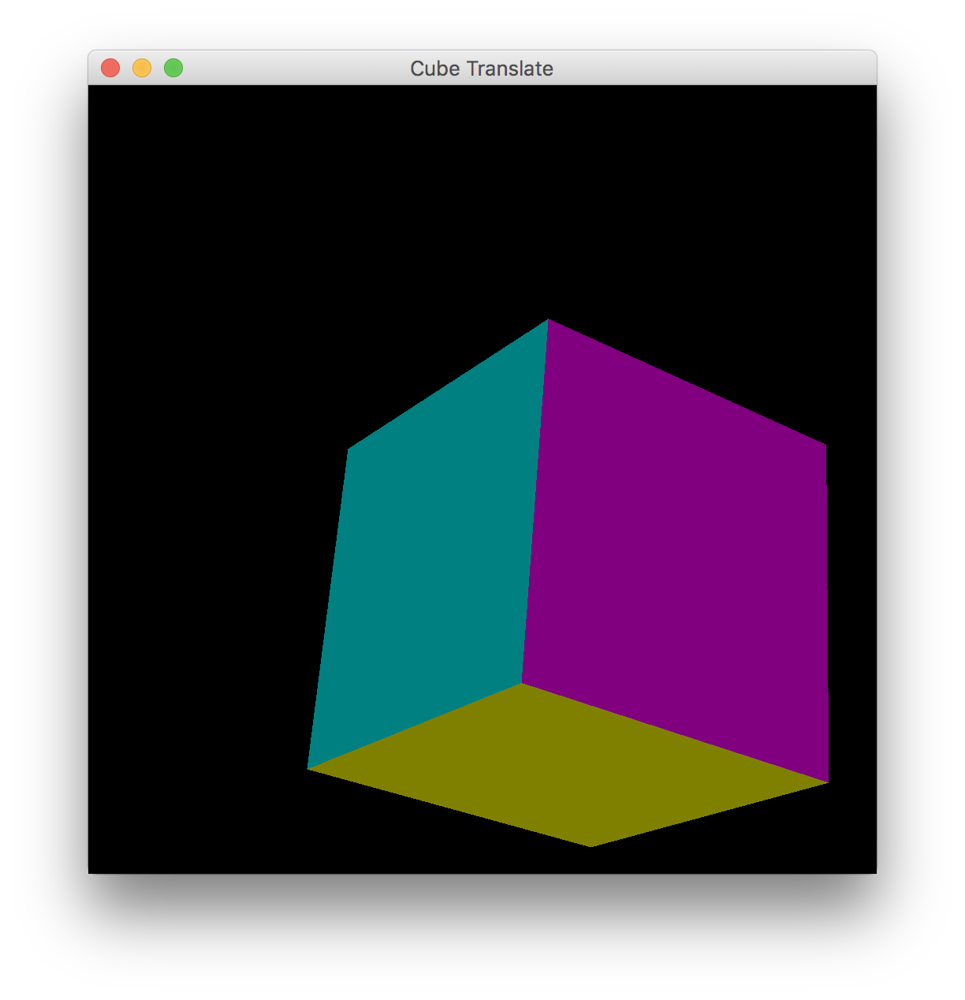
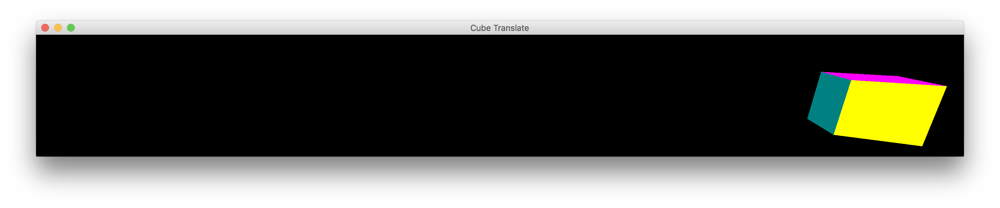
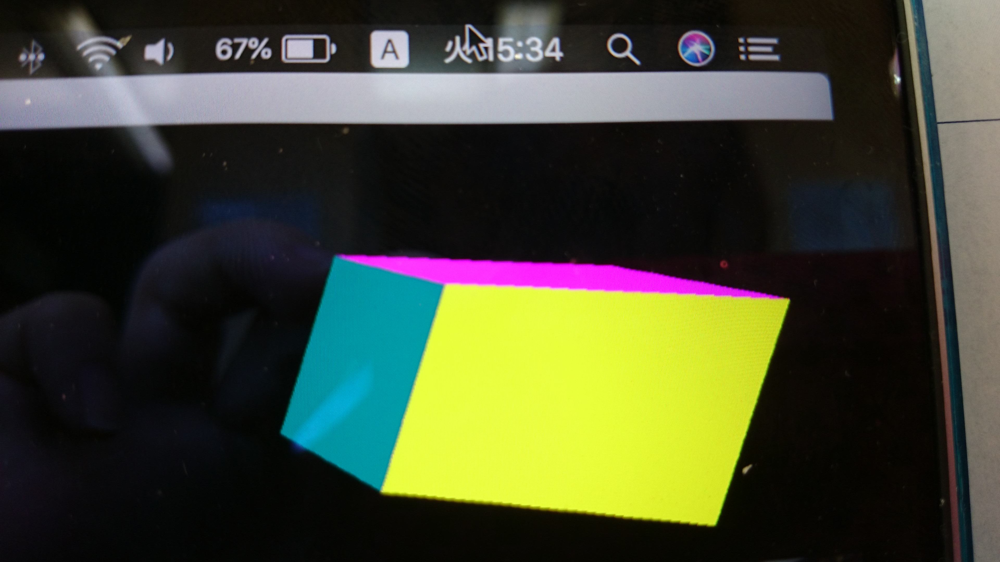
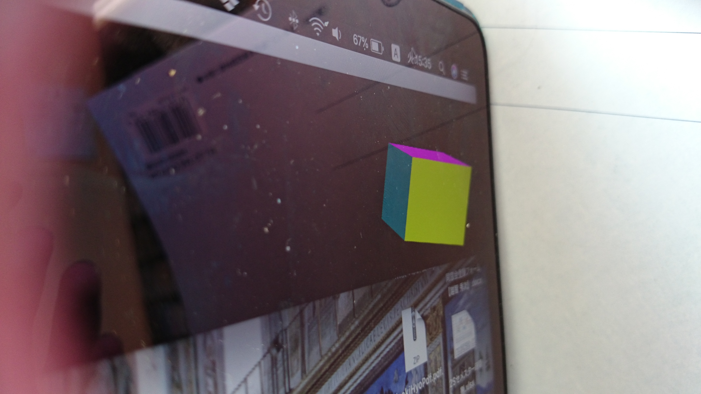
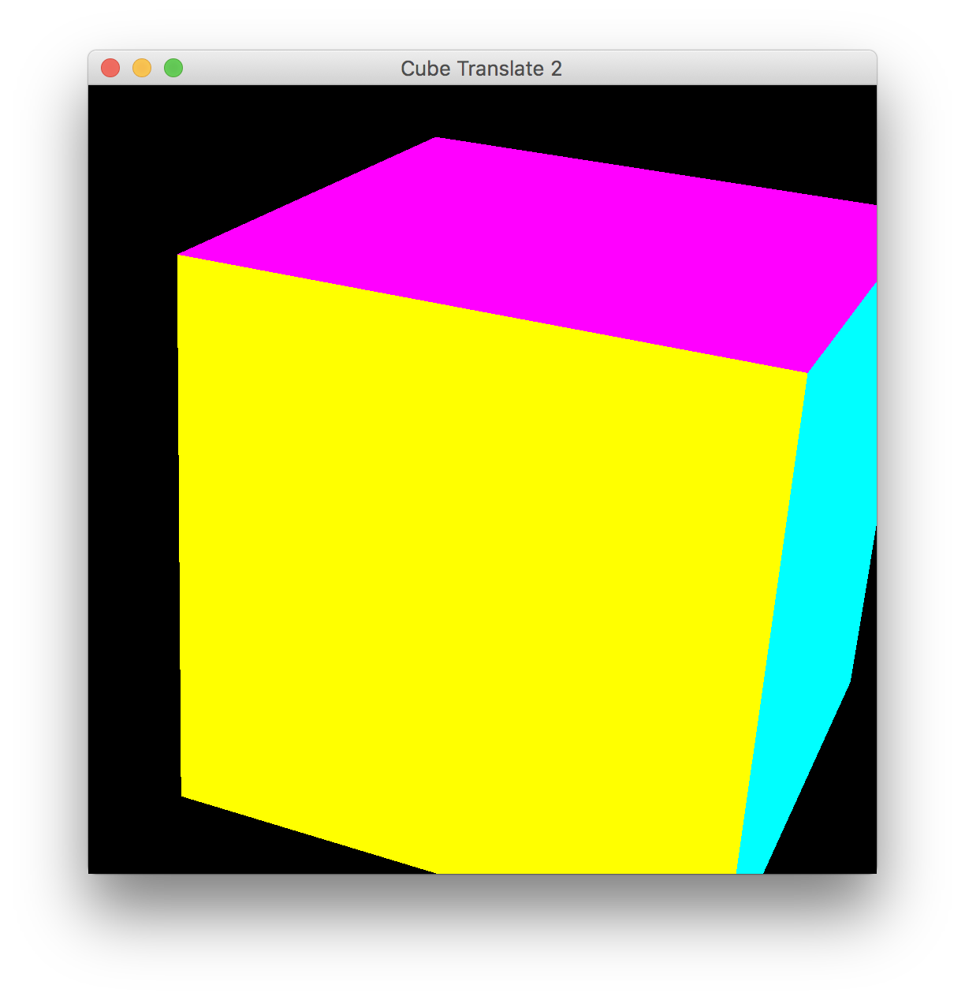
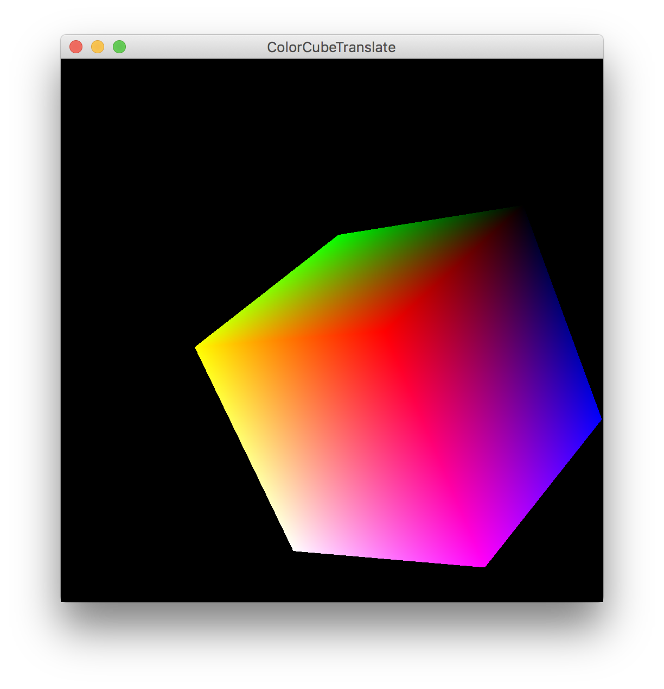
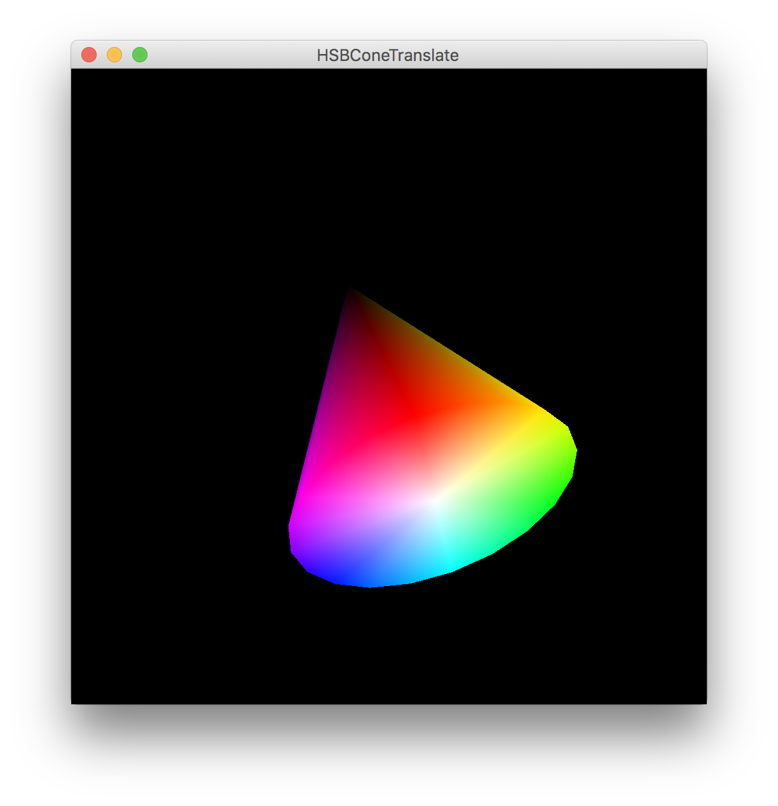

| 氏名 | 越智 秀次 |
|---|---|
| クラス | 理 科 一 類 11 組 |
| 学生証番号 | J4-170235 |
略
実装されるクラスによってsetMatrixメソッドとrotAroundAxisメソッドの内容が異なることに注意する。
略
プログラムの空白には教科書118ページ(15.5)に該当する式が入る。 (15.5)でa=(0,1,0)とすると、Raθは{cosθ, 0, sinθ, 0, 1, 0, -sinθ, 0, cosθ} (行優先で記す) となり、11章85ページにあるy軸周りの回転行列と一致することが確認できる。x軸、z軸周りに関しても同様のことが確かめられる。
略
四元数は工学分野においては姿勢制御などに往々にして利用される。この機会に色々と調べてみたいと思う。
略
教科書の例題プログラムでは左ボタンが押されておらず、かつ修飾子とMouseEvent.SHIFT_MASKの積が0の時に平行移動が行われる。つまり、shiftキーを押していない状態なら右ボタンでなくともマウスホイールの押下とドラッグによっても平行移動が行われる。
略
ochihidejinoMacBook-Pro:Chap15 ochihideji$ java CubeTranslate

ここでは章末課題【透視投影の効果】について考察する。CubeTranslateを起動し、図1に示したようにウィンドウを細長くした状態で立方体を右端の方で描画してみる。この立方体を携帯電話のカメラを使って異なる角度から撮影してみる。図2のように立方体の正面から撮影すると立方体は歪んだままで観察される。しかし、図3のように立方体を斜めから観察するとゆがみが相殺されて、立方体はほとんど歪んでいないように見える。バスタブ錯視の場合も同様で、初めは斜めから絵を観察しているためバスタブは歪んでいないように見えるが、視点が移動して絵の正面~左側に移動するにつれて透視投影の効果が強調されバスタブが歪んで(伸びて)いくように見える。このような像の歪みは画角が広い場合に観察され、画角が比較的小さい時には歪みは目につかない。広角領域に描かれた絵の歪みを故意に利用する画法をアナモルフォーシスといい、道路標識などに利用される。(参考ページ: http://www.persfreaks.jp/main/aov/dist2/)
図1

図2

図3
ObjectTranslate2.java
import java.awt.*;
import java.awt.event.*;
import javax.media.opengl.*;
import javax.media.opengl.awt.*;
public abstract class ObjectTranslate2 extends ObjectSpin {
private final float transRatio = 5.0f;
private double[] offset = {0.0, 0.0, 0.0};
private Rotation state = null;
//private Rotation ident = RotMatrix.identity();
private Rotation ident = Quaternion.identity();
protected ObjectTranslate2(String name) {
super(name);
}
protected void motionInit(GLAutoDrawable drawable) {
((GLCanvas)drawable).addMouseMotionListener(new MouseMotionAdapter() {
public void mouseDragged(MouseEvent e) {
int x = e.getX();
int y = e.getY();
Dimension size = e.getComponent().getSize();
float deltaX = x - prevX;
float deltaY = y - prevY;
int modifier = e.getModifiers();
if ((modifier & MouseEvent.BUTTON1_MASK) != 0) {
angle = Math.sqrt(deltaX*deltaX + deltaY*deltaY)*rotateRatio / Math.max(size.width, size.height);
glu.gluUnProject(origin[0]+deltaY, origin[1]+deltaX, origin[2], modelMatrix, 0, projMatrix, 0, viewport, 0, axis, 0);
if ((modifier & InputEvent.SHIFT_MASK) != 0) {
offset[2] += deltaY * transRatio / size.height;
}
}
else {
if ((modifier & MouseEvent.SHIFT_MASK) == 0) {
offset[0] += deltaX * transRatio / size.height;
offset[1] -= deltaY * transRatio / size.height;
}
}
prevX = x;
prevY = y;
}
});
}
protected void positionInit() {
offset[0] = offset[1] = 0.0;
offset[2] = depth;
state = ident.rotAroundAxis(rotx, 1.0, 0.0, 0.0).rotAroundAxis(roty, 0.0, 1.0, 0.0).rotAroundAxis(rotz, 0.0, 0.0, 1.0);
gl.glGetDoublev(GL2.GL_PROJECTION_MATRIX, projMatrix, 0);
gl.glGetIntegerv(GL2.GL_VIEWPORT, viewport, 0);
}
protected void setMatrix() {
state = state.rotAroundAxis(angle, axis[0], axis[1], axis[2]);
state.setMatrix(modelMatrix, offset);
gl.glLoadIdentity();
gl.glMultMatrixd(modelMatrix, 0);
gl.glLoadIdentity();
gl.glMultMatrixd(modelMatrix, 0);
glu.gluProject(0.0, 0.0, 0.0, modelMatrix, 0, projMatrix, 0, viewport, 0, origin, 0);
gl.glClear(GL2.GL_COLOR_BUFFER_BIT | GL2.GL_DEPTH_BUFFER_BIT);
}
}
CubeTranslate2.java
public class CubeTranslate2 extends ObjectTranslate2 {
public static void main(String[] args) {
(new CubeTranslate2("Cube Translate 2")).showFrame();
}
protected CubeTranslate2(String name) {
super(name);
object = new Cube();
}
}
ochihidejinoMacBook-Pro:Chap15 ochihideji$ java CubeTranslate2

左ボタンが押されている条件下で、shiftボタンが押下された場合にy方向のカーソル移動によって奥行き方向のパラメータ(offset[2])を調節する。この時プログラム33行目の(modifier & MouseEvent.SHIFT_MASK) == 0という条件がうまく活かされる。
略
ochihidejinoMacBook-Pro:Chap15 ochihideji$ java ColorCubeTranslate.java

このプログラムでは補色の関係にある2つの色が立方体の向かい合う頂点に割り当てられている。
import java.awt.Color;
import javax.media.opengl.*;
public class HSBConeTranslate extends ObjectTranslate {
public static void main(String[] args) {
(new HSBConeTranslate("HSBConeTranslate")).showFrame();
}
protected HSBConeTranslate(String name) {
super(name);
object = new HSBCone();
}
}
class HSBCone implements DisplayObject {
final int NOP = 20;
float[] apex = {0.0f, 1.0f, 0.0f};
float[] center = {0.0f, -1.0f, 0.0f};
float[] apexColor = {0.0f, 0.0f, 0.0f};
float[] centerColor = {1.0f, 1.0f, 1.0f};
public void display(GL2 gl) {
float[][] circle = new float[NOP+1][];
for (int i = 0; i <= NOP; i++) {
double t = 2.0 * Math.PI * i / NOP;
circle[i] = new float[3];
circle[i][0] = (float)Math.sin(t);
circle[i][1] = -1.0f;
circle[i][2] = (float)Math.cos(t);
}
float[][] colors = new float[NOP+1][];
Color[] c = new Color[NOP+1];
for (int i = 0; i <= NOP; i++) {
c[i] = Color.getHSBColor((float)i / NOP, 1.0f, 1.0f);
colors[i] = c[i].getRGBColorComponents(null);
}
gl.glBegin(GL2.GL_TRIANGLE_FAN);
gl.glColor3fv(apexColor, 0);
gl.glVertex3fv(apex, 0);
for (int i = 0; i <= NOP; i++) {
gl.glColor3fv(colors[i], 0);
gl.glVertex3fv(circle[i], 0);
}
gl.glEnd();
gl.glBegin(GL2.GL_TRIANGLE_FAN);
gl.glColor3fv(centerColor, 0);
gl.glVertex3fv(center, 0);
for (int i = 0; i <= NOP; i++) {
gl.glColor3fv(colors[NOP-i], 0);
gl.glVertex3fv(circle[NOP-i], 0);
}
gl.glEnd();
}
}
ochihidejinoMacBook-Pro:Chap15 ochihideji$ java HSBConeTranslate

円錐の大きさや頂点座標などについては第14章で用いた円錐を利用した。OpenGLの機能によって色が補間されるので、頂点や底面の中心はRGB値を指定するだけで良い。
5時間以上
HSB色立体の描画で、getRGBColorComponentの使い方がわからずかなり手間取った。Webで使い方の例などを調べることによってなんとかプログラムを完成させることができた。
四元数についての学習を深めたいと思います。